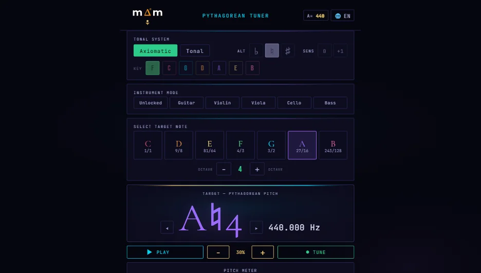
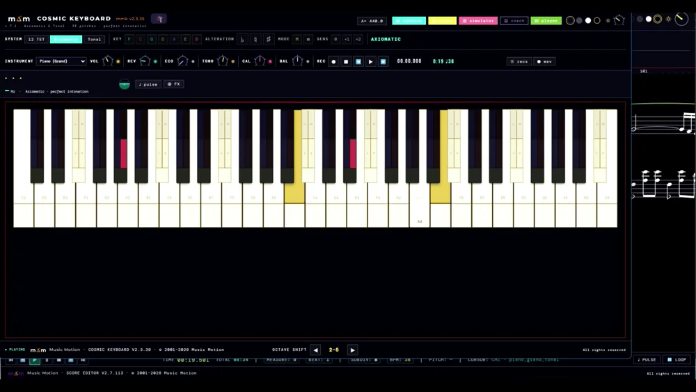
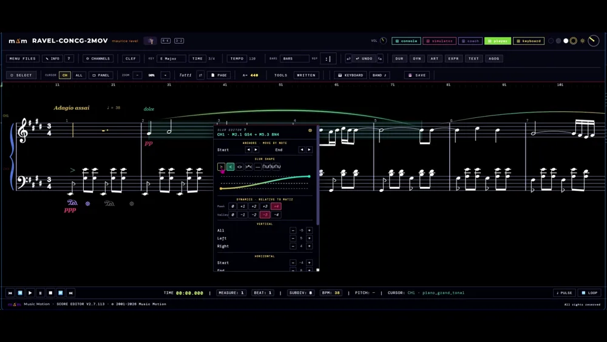
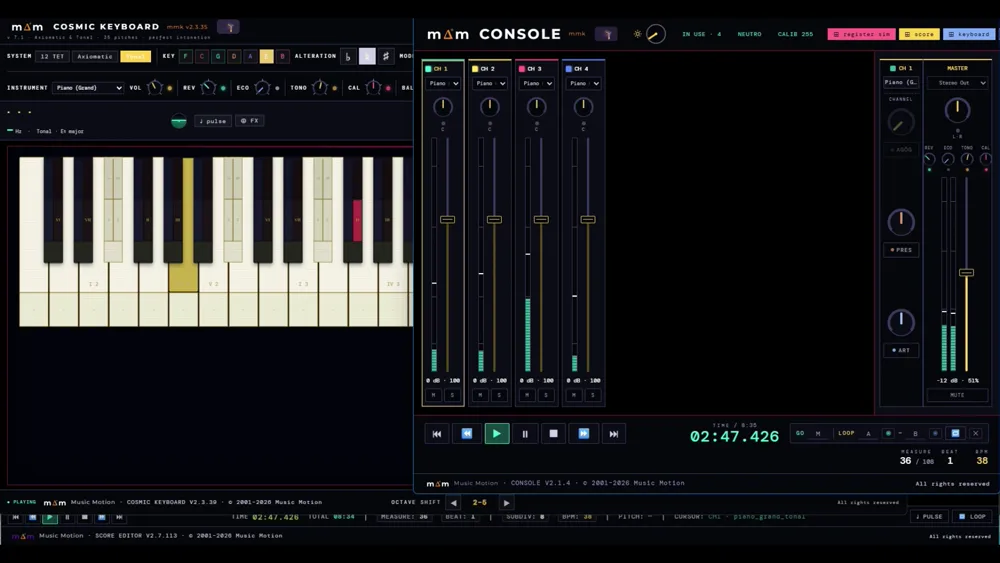
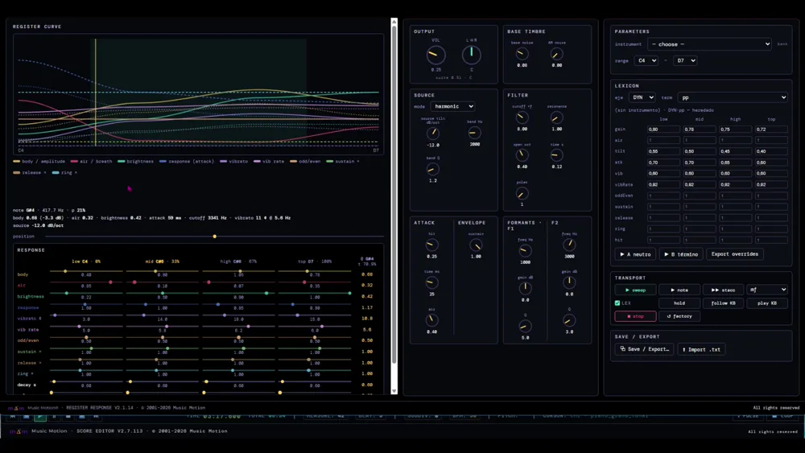
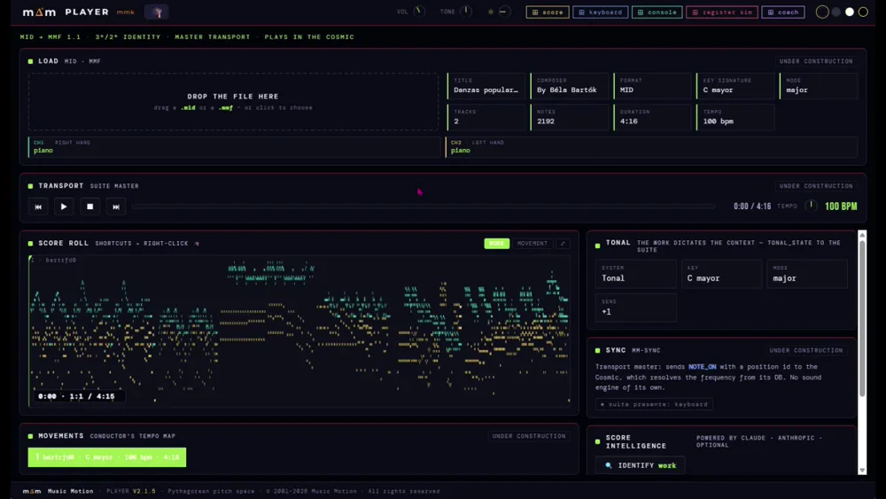
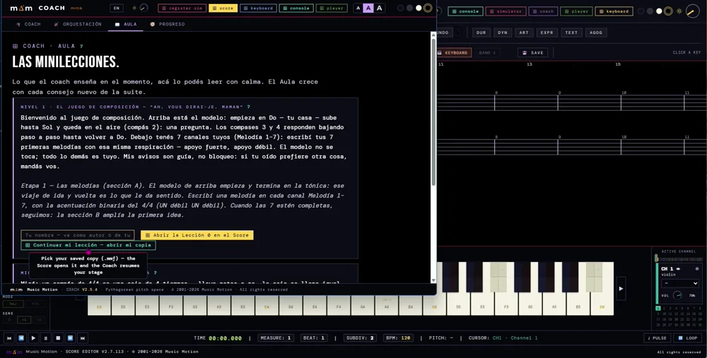

Lo que el oído canta, la fórmula lo escribe. What the ear sings, the formula writes.
Abre, toca y escucha. Funciona en el navegador de tu computadora, tableta o teléfono: no hay nada que instalar ni que aprender antes. Open it, play and listen. It works in the browser on your computer, tablet or phone: nothing to install and nothing to learn first.
Si sabes leer música, ya sabes usarlo. El teclado de tu computadora es el instrumento.If you can read music, you already know how to use it. Your computer keyboard is the instrument.
¿Qué quieres hacer?What would you like to do?
Elige una puerta. Cada una abre directamente lo que necesitas; el resto lo descubres después, a tu ritmo.Pick a door. Each one opens exactly what you need; the rest you discover later, at your own pace.
Afinar mi instrumentoTune my instrument
El afinador te muestra cada nota con su nombre verdadero: Do♯ no es Re♭. Usa el micrófono, en la computadora o en el teléfono.The tuner shows each note with its true name: C♯ is not D♭. It uses the microphone, on your computer or your phone.
Tocar y escucharPlay and listen
Tu teclado se vuelve un instrumento afinado de oído, con más de sesenta sonidos: del piano al violín, del órgano a la voz.Your keyboard becomes an instrument tuned by ear, with more than sixty sounds: from piano to violin, from organ to voice.
Practicar con acompañamientoPractise with accompaniment
Canta o toca tu parte con el piano sonando. Cambia la tonalidad o el instrumento y grábate para escucharte. Para cantantes e instrumentistas.Sing or play your part with the piano sounding. Change the key or the instrument and record yourself to listen back. For singers and instrumentalists.
EnseñarTeach
Escribe tus ejercicios en una partitura que suena y compártelos con tus alumnos. Para academias y colegios: 1 € por alumno cada 30 días.Write your exercises in a score that sounds and share them with your students. For academies and schools: €1 per student every 30 days.
Tres caminos para aprender con Music MotionThree ways to learn with Music Motion
Elige el tuyo: cada camino tiene sus materiales y su punto de partida.Pick yours: each path has its own materials and its own starting point.
En la escuela: el maestro que no es músicoAt school: the teacher who is not a musician
En primaria un solo maestro da todas las materias. Con Music Motion puede dar también la clase de música sin formación musical: clases de 50 minutos listas para usar, con la guía paso a paso y una hoja para que los padres jueguen en casa con sus hijos.In primary school one teacher teaches every subject. With Music Motion they can teach music too, with no musical training: ready-to-use 50-minute lessons, with a step-by-step guide and a sheet so parents can play along at home with their children.
- Basta un portátil o una tableta y unos parlantes: el gasto es mínimoA laptop or a tablet and a pair of speakers are enough: the cost is minimal
- Una propuesta también para la pedagogía musical: tesis, prácticas o proyectos en escuelasAlso a proposal for music education studies: theses, teaching practice or school projects
Paso a paso: descubrir las aplicacionesStep by step: discovering the apps
Ejercicios guiados para conocer el teclado, la partitura, la consola y el acompañamiento, uno detrás de otro y a tu ritmo. No hace falta saber nada antes.Guided exercises to get to know the keyboard, the score, the console and accompaniment, one after another and at your own pace. Nothing to know beforehand.
- Cada ejercicio en página y en PDF, en cinco idiomasEach exercise as a page and as a PDF, in five languages
Para músicos: armonía, contrapunto, orquestación y composiciónFor musicians: harmony, counterpoint, orchestration and composition
Para estudiantes de escuelas de música y conservatorios, y para sus profesores. El Coach acompaña la escritura por etapas —melodías, dúos, tríos y cuartetos— con las reglas del contrapunto: avisa sin bloquear y guarda el registro de tu progreso.For students at music schools and conservatoires, and for their teachers. The Coach guides your writing stage by stage — melodies, duos, trios and quartets — with the rules of counterpoint: it warns without blocking and keeps a record of your progress.
- El cofre de orquestación: registro, carácter y dinámica de cada instrumentoThe orchestration chest: range, character and dynamics of each instrument
- Niveles que crecen con el estudianteLevels that grow with the student
Un sostenido no es un bemolA sharp is not a flat
Re♯ y Mi♭ son dos alturas distintas, y aquí suenan distintas: en el afinador, en el teclado y en la partitura. Todo Music Motion se apoya en la afinación pitagórica: octavas y quintas puras, sin los redondeos del temperamento, y el oído como juez. D♯ and E♭ are two different pitches, and here they sound different: in the tuner, on the keyboard and in the score. All of Music Motion rests on Pythagorean tuning: pure octaves and fifths, without equal temperament's rounding, and the ear as the judge.
Se aprende por inmersión gradual: la afinación, la escritura, la interpretación, el acompañamiento y la orquestación, paso a paso, al ritmo de quien aprende o de quien enseña.You learn by gradual immersion: tuning, writing, interpretation, accompaniment and orchestration, step by step, at the pace of the learner or the teacher.
Dos herramientas, una sola afinaciónTwo tools, one tuning
Lo que afinas en una suena igual en la otra: debajo de las dos está la misma tabla de alturas, escrita en proporciones exactas.What you tune in one sounds the same in the other: under both sits the same table of pitches, written in exact ratios.
El afinadorThe tuner

El primer afinador no temperado, en la computadora o en el teléfono — puedes descargarlo gratis, un regalo de Music Motion.The first non-tempered tuner, on your computer or your phone — you can download it as a free gift from Music Motion.
El único afinador que muestra la grafía musical verdadera: Do♯ ≠ Re♭. Entonación pitagórica pura, con sostenidos, bemoles, dobles alteraciones y posición tonal. Para guitarra, violín, viola, cello y contrabajo, y un modo libre para cualquier instrumento.The only tuner that shows true musical spelling: C♯ ≠ D♭. Pure Pythagorean intonation, with sharps, flats, double alterations and tonal position. For guitar, violin, viola, cello and bass, plus an unlocked mode for any instrument.
- Medidor ♭♭ ♭ ● ♯ ♯♯: la nota con su nombre exacto, no la más cercana♭♭ ♭ ● ♯ ♯♯ meter: the note with its exact name, not the nearest one
- La4 = 440 Hz, ajustable (415 · 430 · 432 · 440 · 442 · 466)A4 = 440 Hz, adjustable (415 · 430 · 432 · 440 · 442 · 466)
- Con el micrófono, procesado en tu equipo: nada se graba ni se envía. Sin instalar.From the microphone, processed on your device: nothing is recorded or sent. Nothing to install.
La suiteThe suite
Seis aplicaciones en el navegador que se hablan en tiempo real: un motor de sonido pitagórico, un editor de partituras que toca por grados, una consola de mezcla, un banco de timbres, un copista de MIDI y un coach que enseña a componer sin haber estudiado teoría.Six browser apps talking to each other in real time: a Pythagorean sound engine, a score editor that plays by degrees, a mixing console, a timbre bench, a MIDI copyist and a coach that teaches composition without prior theory.






- Más de sesenta instrumentos, todos pitagóricos — también el pianoMore than sixty instruments, all Pythagorean — the piano included
- Guía de uso, atajos y biblioteca de instrumentos, en español, inglés, francés, neerlandés y alemánUser guide, shortcuts and instrument library, in Spanish, English, French, Dutch and German
- Su propio formato, el MMF —la obra con su afinación exacta y su interpretación adentro—, con tres obras para bajar y abrirIts own format, MMF —the piece with its exact tuning and its performance inside—, with three works to download and open
Tócalo ya: el teclado de tu computadora es el instrumento. Ver los atajos →Play it right away: your computer keyboard is the instrument. See the shortcuts →
Lo que se puede bajarWhat you can download
Las herramientas viven en el navegador y no necesitan instalación. Lo que se baja son las obras de demostración —Bartók, Bach, Ravel y el Epitafio de Seikilos— y los ejercicios paso a paso, para abrir en el Score.The tools live in the browser and need no installation. What you download are the demo works — Bartók, Bach, Ravel and the Epitaph of Seikilos — and the step-by-step exercises, to open in the Score.